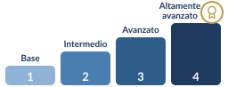
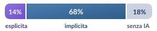

Cosgrove, J., & Cachia, R. (2025) · Joint Research Centre, Commissione europea doi: 10.2760/0001149DigComp 3.0: European Digital Competence Framework – Fifth Edition. Publications Office of the European Union, Luxembourg.
5 aree · 21 competenze
Competenza digitale: uso sicuro, critico e responsabile delle tecnologie digitali per apprendere, lavorare e partecipare alla società.1 · Ricerca, valutazione e gestione delle informazioni
- 1.1 Navigare, cercare, filtrare
- 1.2 Valutare
- 1.3 Gestire
2 · Comunicazione e collaborazione
- 2.1 Interagire
- 2.2 Condividere
- 2.3 Cittadinanza
- 2.4 Collaborare
- 2.5 Comportamento digitale
- 2.6 Identità digitale
3 · Creazione di contenuti
- 3.1 Sviluppare
- 3.2 Integrare e rielaborare
- 3.3 Copyright e licenze
- 3.4 Pensiero computazionale e programmazione
4 · Sicurezza, benessere e uso responsabile
- 4.1 Dispositivi
- 4.2 Dati personali e privacy
- 4.3 Benessere
- 4.4 Ambiente
5 · Individuazione e soluzione dei problemi
- 5.1 Problemi tecnici
- 5.2 Bisogni e risposte tecnologiche
- 5.3 Soluzioni creative
- 5.4 Bisogni di competenza digitale
362 enunciati di competenza · 523 risultati di apprendimento
Quattro livelli di padronanza

Ogni livello combina impegno cognitivo, complessità del compito e autonomia. Novità: i risultati di apprendimento.
Quota degli enunciati di competenza che riguardano l’IA
L’IA entra in modo trasversale

L’IA compare in tutte le 21 competenze; la definizione è quella dell’AI Act, art. 3, punto 1). Altre novità: cibersicurezza, diritti digitali, benessere, disinformazione.